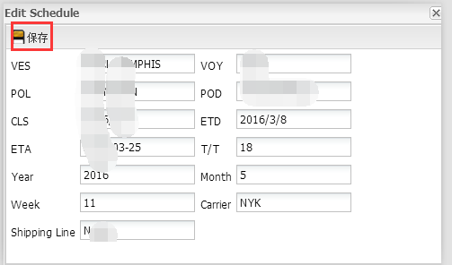
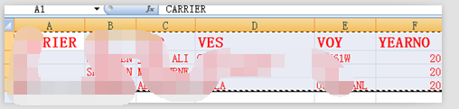
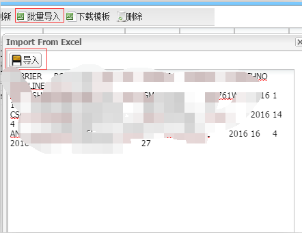
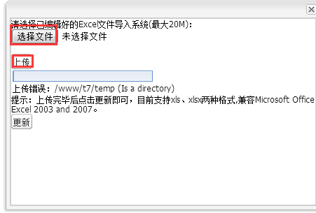

1.下图是船期页面

2.双击需要修改的船期条目可弹出船期详细信息，修改完成后点击保存。

3.如需新增船期，请点击“下载模板”,将需要添加的数据添加到从系统下载的船期模板当中，然后复制从英文表头开始到表格结束，示例如下图：

4.复制完毕后点击“批量导入”，将复制的数据粘贴到文本框中，再点击“导入”，即可批量导入船期数据，示例如下图：

（注：这种导入方式非常适合大批量数据的导入，遇到大批量数据导入时，我们建议您选用这种方式提高工作效率！）
5.点击可将编辑好的Excl文件导入系统，先选择文件再点击上传。
